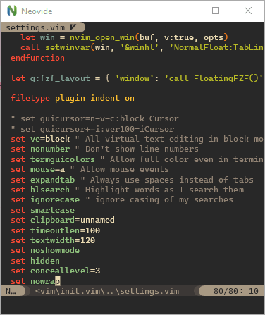
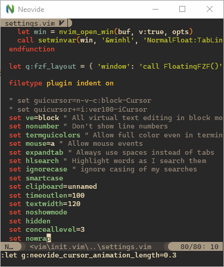

Configuration
Global Vim Settings
Neovide supports settings via global variables with a neovide prefix. They enable configuring many parts of the editor and support dynamically changing them at runtime.
init.vim and init.lua helpers
Hello, is this Neovide?
Not really a configuration option, but g:neovide only exists and is set to v:true if this Neovim
is in Neovide. Useful for configuring things only for Neovide in your init.vim/init.lua:
VimScript:
if exists("g:neovide")
" Put anything you want to happen only in Neovide here
endif
Lua:
if vim.g.neovide then
-- Put anything you want to happen only in Neovide here
end
You can also query the version with:
echo g:neovide_version
Lua:
vim.print(vim.g.neovide_version)
Or inspect the more detailed channel information:
Lua:
lua vim.print(vim.api.nvim_get_chan_info(vim.g.neovide_channel_id))
Display
Font
VimScript:
set guifont=Source\ Code\ Pro:h14
Lua:
vim.o.guifont = "Source Code Pro:h14" -- text below applies for VimScript
Controls the font used by Neovide. Also check the config file to see how to
configure features. This is the only setting which is actually controlled through an option, and
as such it's also documented in :h guifont. But to sum it up and also add Neovide's extension:
- The basic format is
Primary\ Font,Fallback\ Font\ 1,Fallback\ Font\ 2:option1:option2:option3, while you can have as many fallback fonts as you want (even 0) and as many options as you want (also even 0). - Fonts
- are separated with
,(commas). - can contain spaces by either escaping them or using
_(underscores).
- are separated with
- Options
- apply to all fonts at once.
- are separated from the fonts and themselves through
:(colons). - can be one of the following:
hX— Sets the font size toXpoints, whileXcan be any (even floating-point) number.wX(available since 0.11.2) — Sets the width relative offset to beXpoints, whileXcan be again any number. Negative values shift characters closer together, positive values shift them further apart.b— Sets the font bold.i— Sets the font italic.#e-X(available since 0.10.2) — Sets edge pixels to be drawn opaquely or with partial transparency, whileXis a type of edging:- antialias (default)
- subpixelantialias
- alias
#h-X(available since 0.10.2) - Sets level of glyph outline adjustment, whileXis a type of hinting:- full (default)
- normal
- slight
- none
- Some examples:
Hack,Noto_Color_Emoji:h12:b— Hack at size 12 in bold, with Noto Color Emoji as fallback should Hack fail to contain any glyph.Roboto_Mono_Light:h10— Roboto Mono Light at size 10.Hack:h14:i:#e-subpixelantialias:#h-none
Line spacing
VimScript:
set linespace=0
Lua:
vim.opt.linespace = 0
Controls spacing between lines, may also be negative. Setting linespace can result in vertical gaps
when rendering box drawing characters, see Box
Drawing section on how to fix this.
Scale
VimScript:
let g:neovide_scale_factor = 1.0
Lua:
vim.g.neovide_scale_factor = 1.0
Available since 0.10.2.
In addition to setting the font itself, this setting allows to change the scale without changing the whole font definition. Very useful for presentations. See the FAQ section about this for a nice recipe to bind this to a hotkey.
Text Gamma and Contrast
VimScript:
let g:neovide_text_gamma = 0.0
let g:neovide_text_contrast = 0.5
Lua:
vim.g.neovide_text_gamma = 0.0
vim.g.neovide_text_contrast = 0.5
Available since 0.13.0.
You can fine tune the gamma and contrast of the text to your liking. The defaults is a good compromise that gives readable text on all backgrounds and an accurate color representation. But if that doesn't suit you, and you want to emulate the Alacritty font rendering for example you can use a gamma of 0.8 and a contrast of 0.1.
Note a gamma of 0.0, means standard sRGB gamma or 2.2. Also note that these settings don't necessarily apply immediately due to caching of the fonts.
Padding
VimScript:
let g:neovide_padding_top = 0
let g:neovide_padding_bottom = 0
let g:neovide_padding_right = 0
let g:neovide_padding_left = 0
Lua:
vim.g.neovide_padding_top = 0
vim.g.neovide_padding_bottom = 0
vim.g.neovide_padding_right = 0
vim.g.neovide_padding_left = 0
Available since 0.10.4.
Controls the space between the window border and the actual Neovim, which is filled with the background color instead.
Background Color (Deprecated, Currently macOS only)
This configuration is deprecated now and might be removed in the future. In
#2168, we have made Neovide control the title bar
color itself. The color of title bar now honors neovide_opacity. If you want
a transparent title bar, setting neovide_opacity is sufficient.
VimScript:
" g:neovide_opacity should be 0 if you want to unify transparency of content and title bar.
let g:neovide_opacity = 0.0
let g:transparency = 0.8
let g:neovide_background_color = '#0f1117'.printf('%x', float2nr(255 * g:transparency))
Lua:
-- Helper function for transparency formatting
local alpha = function()
return string.format("%x", math.floor(255 * vim.g.transparency or 0.8))
end
-- g:neovide_opacity should be 0 if you want to unify transparency of content and title bar.
vim.g.neovide_opacity = 0.0
vim.g.transparency = 0.8
vim.g.neovide_background_color = "#0f1117" .. alpha()
Available since 0.10. Deprecated in 0.12.2.

Setting g:neovide_background_color to a value that can be parsed by
csscolorparser-rs will set the color of the whole
window to that value.
Note that g:neovide_opacity should be 0 if you want to unify transparency of content and
title bar.
Title Bar Color (Currently Windows only)
Available since 0.14.0.

Setting g:neovide_title_background_color to a value that can be parsed by
csscolorparser-rs will set
color the title window to that value.
VimScript:
let g:neovide_title_background_color = "green"
let g:neovide_title_text_color = "pink"
lua:
vim.g.neovide_title_background_color = string.format(
"%x",
vim.api.nvim_get_hl(0, {id=vim.api.nvim_get_hl_id_by_name("Normal")}).bg
)
vim.g.neovide_title_text_color = "pink"
Window Blur (Currently macOS only)
VimScript:
let g:neovide_window_blurred = v:true
Lua:
vim.g.neovide_window_blurred = true
Available since 0.12.
Setting g:neovide_window_blurred toggles the window blur state.
The blurred level respects the g:neovide_opacity value between 0.0 and 1.0.
Floating Blur Amount
VimScript:
let g:neovide_floating_blur_amount_x = 2.0
let g:neovide_floating_blur_amount_y = 2.0
Lua:
vim.g.neovide_floating_blur_amount_x = 2.0
vim.g.neovide_floating_blur_amount_y = 2.0
Available since 0.9.
Setting g:neovide_floating_blur_amount_x and g:neovide_floating_blur_amount_y controls the blur
radius on the respective axis for floating windows.
Floating Shadow
VimScript:
let g:neovide_floating_shadow = v:true
let g:neovide_floating_z_height = 10
let g:neovide_light_angle_degrees = 45
let g:neovide_light_radius = 5
Lua:
vim.g.neovide_floating_shadow = true
vim.g.neovide_floating_z_height = 10
vim.g.neovide_light_angle_degrees = 45
vim.g.neovide_light_radius = 5
Available since 0.12.0.
Setting g:neovide_floating_shadow to false will disable the shadow borders for floating windows.
The other variables configure the shadow in various ways:
g:neovide_floating_z_heightsets the virtual height of the floating window from the ground planeg:neovide_light_angle_degreessets the angle from the screen normal of the casting lightg:neovide_light_radiussets the radius of the casting light
Floating Corner Radius
VimScript:
let g:neovide_floating_corner_radius = 0.0
Lua:
vim.g.neovide_floating_corner_radius = 0.0
Setting g:neovide_floating_corner_radius to 0.0 will disable the corner radius. The value of
floating_corner_radius ranges from 0.0 to 1.0, representing a percentage of the line height.
Transparency
VimScript:
let g:neovide_opacity = 0.8
let g:neovide_normal_opacity = 0.8
Lua:
vim.g.neovide_opacity = 0.8
vim.g.neovide_normal_opacity = 0.8
Available since 0.14.0.

Setting g:neovide_opacity to a value between 0.0 and 1.0 will set the opacity of the window
to that value.
g:neovide_normal_opacity sets the opacity for the normal background color.
Set it to 1 to disable.
Show Border (Currently macOS only)
VimScript:
let g:neovide_show_border = v:true
Lua:
vim.g.neovide_show_border = true
Draw a grey border around opaque windows only.
Default: false
Position Animation Length
VimScript:
let g:neovide_position_animation_length = 0.15
Lua:
vim.g.neovide_position_animation_length = 0.15
Determines the time it takes for a window to complete animation from one position to another
position in seconds, such as :split. Set to 0 to disable.
Scroll Animation Length
VimScript:
let g:neovide_scroll_animation_length = 0.3
Lua:
vim.g.neovide_scroll_animation_length = 0.3
Sets how long the scroll animation takes to complete, measured in seconds. Note that the timing is not completely accurate and might depend slightly on have far you scroll, so experimenting is encouraged in order to tune it to your liking.
Far scroll lines
Available since 0.12.0.
VimScript:
let g:neovide_scroll_animation_far_lines = 1
Lua:
vim.g.neovide_scroll_animation_far_lines = 1
When scrolling more than one screen at a time, only this many lines at the end of the scroll action will be animated. Set it to 0 to snap to the final position without any animation, or to something big like 9999 to always scroll the whole screen, much like Neovide <= 0.10.4 did.
Progress Bar
VimScript:
let g:neovide_progress_bar_enabled = v:true
let g:neovide_progress_bar_height = 5.0
let g:neovide_progress_bar_animation_speed = 200.0
let g:neovide_progress_bar_hide_delay = 0.2
Lua:
vim.g.neovide_progress_bar_enabled = true
vim.g.neovide_progress_bar_height = 5.0
vim.g.neovide_progress_bar_animation_speed = 200.0
vim.g.neovide_progress_bar_hide_delay = 0.2
Unreleased yet.
g:neovide_progress_bar_enabledsets whether the progress bar is enabled.g:neovide_progress_bar_heightsets the height of the progress bar in pixels.g:neovide_progress_bar_animation_speedsets the speed of the progress bar animation.g:neovide_progress_bar_hide_delaysets the delay in seconds before the progress bar is hidden after reaching 100%.
Hiding the mouse when typing
VimScript:
let g:neovide_hide_mouse_when_typing = v:false
Lua:
vim.g.neovide_hide_mouse_when_typing = false
By setting this to v:true, the mouse will be hidden as soon as you start typing. This setting
only affects the mouse if it is currently within the bounds of the neovide window. Moving the
mouse makes it visible again.
Underline automatic scaling
VimScript:
let g:neovide_underline_stroke_scale = 1.0
Lua:
vim.g.neovide_underline_stroke_scale = 1.0
Available since 0.12.0.
Setting g:neovide_underline_stroke_scale to a floating point will increase or decrease the stroke
width of the underlines (including undercurl, underdash, etc.). If the scaled stroke width is less
than 1, it is clamped to 1 to prevent strange aliasing.
Note: This is currently glitchy if the scale is too large, and leads to some underlines being clipped by the line of text below.
Theme
VimScript:
let g:neovide_theme = 'auto'
Lua:
vim.g.neovide_theme = 'auto'
Available since 0.11.0.
Set the background option when Neovide
starts. Possible values: light, dark, auto. On systems that support it, auto will mirror the
system theme, and will update background when the system theme changes.
Unreleased yet.
NOTE: The meaning of the setting has changed in 0.16.0. The default value of the Neovim
background option is now always
automatically set, and updates according to the system theme, as long as the user has not set it to
something else.
Sets the theme of the Neovide window on systems that supports it.
auto- Use the system themelight- Set the window theme to lightdark- Set the window theme to darkbg_color- Determine window theme from the Neovide normal/background color
bg, which would mirror the Neovim background option is not supported yet, due to technical
challenges. If you need that now it's best to set both neovide_theme and background to the same.
The default is auto, except when using --frame transparent on macOS to preserve the old visual
look with that configuration.
Supported platforms:
- Windows
- MacOS
- Linux Wayland with client-side decorations (Most notably Gnome)
Layer grouping
VimScript:
let g:experimental_layer_grouping = v:false
Lua:
vim.g.experimental_layer_grouping = false
Available since 0.13.1.
Group non-emtpy consecutive layers (zindex) together, so that the shadows and blurring is done for the whole group instead of each individual layer. This can get rid of some shadowing and blending artifacts, but cause worse problems like #2574.
Functionality
Refresh Rate
VimScript:
let g:neovide_refresh_rate = 60
Lua:
vim.g.neovide_refresh_rate = 60
Setting g:neovide_refresh_rate to a positive integer will set the refresh rate of the app. This is
limited by the refresh rate of your physical hardware, but can be lowered to increase battery life.
This setting is only effective when not using vsync, for example by passing --no-vsync on the
commandline.
Idle Refresh Rate
VimScript:
let g:neovide_refresh_rate_idle = 5
Lua:
vim.g.neovide_refresh_rate_idle = 5
Available since 0.10.
Setting g:neovide_refresh_rate_idle to a positive integer will set the refresh rate of the app
when it is not in focus.
This might not have an effect on every platform (e.g. Wayland).
No Idle
VimScript:
let g:neovide_no_idle = v:true
Lua:
vim.g.neovide_no_idle = true
Setting g:neovide_no_idle to a boolean value will force neovide to redraw all the time. This can
be a quick hack if animations appear to stop too early.
Confirm Quit
VimScript:
let g:neovide_confirm_quit = v:true
Lua:
vim.g.neovide_confirm_quit = true
If set to true, quitting while having unsaved changes will require confirmation. Enabled by
default.
Detach On Quit
Possible values are always_quit, always_detach, or prompt. Set to prompt by default.
VimScript:
let g:neovide_detach_on_quit = 'always_quit'
Lua:
vim.g.neovide_detach_on_quit = 'always_quit'
This option changes the closing behavior of Neovide when it's used to connect to a remote Neovim instance. It does this by switching between detaching from the remote instance and quitting Neovim entirely.
Fullscreen
VimScript:
let g:neovide_fullscreen = v:true
Lua:
vim.g.neovide_fullscreen = true
Setting g:neovide_fullscreen to a boolean value will set whether the app should take up the entire
screen. This uses the so called "windowed fullscreen" mode that is sometimes used in games which
want quick window switching.
Simple Fullscreen (MacOS only)
VimScript:
let g:neovide_macos_simple_fullscreen = v:true
Lua:
vim.g.neovide_macos_simple_fullscreen = true
Available since 0.15.1.
Setting neovide_macos_simple_fullscreen will hide the dock and menu bar for MacOS.
This won’t work if the window was already in the native fullscreen.
Remember Previous Window Size
VimScript:
let g:neovide_remember_window_size = v:true
Lua:
vim.g.neovide_remember_window_size = true
Setting g:neovide_remember_window_size to a boolean value will determine whether the window size
from the previous session or the default size will be used on startup. The commandline option
--size will take priority over this value.
Profiler
VimScript:
let g:neovide_profiler = v:false
Lua:
vim.g.neovide_profiler = false
Setting this to v:true enables the profiler, which shows a frametime graph in the upper left
corner.
Cursor hack
VimScript:
let g:neovide_cursor_hack = v:true
Lua:
vim.g.neovide_cursor_hack = true
Prevents the cursor from flickering to the command line when it shouldn't. This will be disabled by default when Neovim properly sends the UI busy events and the hack is no longer needed. NOTE: In some cases the hack itself is buggy and prevents the cursor from moving to the command line when it should. In that case you can try to disable it, especially if you are not using cursor animations and the flickering does not bother as much.
Input Settings
macOS Option Key is Meta
Possible values are both, only_left, only_right, none. Set to none by default.
VimScript:
let g:neovide_input_macos_option_key_is_meta = 'only_left'
Lua:
vim.g.neovide_input_macos_option_key_is_meta = 'only_left'
Available since 0.13.0.
Interprets Alt + whatever actually as <M-whatever>, instead of sending the
actual special character to Neovim.
IME
VimScript:
let g:neovide_input_ime = v:true
Lua:
vim.g.neovide_input_ime = true
Available since 0.11.0.
This lets you disable the IME input. For example, to only enables IME in input mode and when searching, so that you can navigate normally, when typing some East Asian languages, you can add a few auto commands:
augroup ime_input
autocmd!
autocmd InsertLeave * execute "let g:neovide_input_ime=v:false"
autocmd InsertEnter * execute "let g:neovide_input_ime=v:true"
autocmd CmdlineLeave [/\?] execute "let g:neovide_input_ime=v:false"
autocmd CmdlineEnter [/\?] execute "let g:neovide_input_ime=v:true"
augroup END
local function set_ime(args)
if args.event:match("Enter$") then
vim.g.neovide_input_ime = true
else
vim.g.neovide_input_ime = false
end
end
local ime_input = vim.api.nvim_create_augroup("ime_input", { clear = true })
vim.api.nvim_create_autocmd({ "InsertEnter", "InsertLeave" }, {
group = ime_input,
pattern = "*",
callback = set_ime
})
vim.api.nvim_create_autocmd({ "CmdlineEnter", "CmdlineLeave" }, {
group = ime_input,
pattern = "[/\\?]",
callback = set_ime
})
Touch Deadzone
VimScript:
let g:neovide_touch_deadzone = 6.0
Lua:
vim.g.neovide_touch_deadzone = 6.0
Setting g:neovide_touch_deadzone to a value equal or higher than 0.0 will set how many pixels the
finger must move away from the start position when tapping on the screen for the touch to be
interpreted as a scroll gesture.
If the finger stayed in that area once lifted or the drag timeout happened, however, the touch will be interpreted as tap gesture and the cursor will move there.
A value lower than 0.0 will cause this feature to be disabled and all touch events will be interpreted as scroll gesture.
Touch Drag Timeout
VimScript:
let g:neovide_touch_drag_timeout = 0.17
Lua:
vim.g.neovide_touch_drag_timeout = 0.17
Setting g:neovide_touch_drag_timeout will affect how many seconds the cursor has to stay inside
g:neovide_touch_deadzone in order to begin "dragging"
Once started, the finger can be moved to another position in order to form a visual selection. If
this happens too often accidentally to you, set this to a higher value like 0.3 or 0.7.
Cursor Settings
Animation Length
 
VimScript:
let g:neovide_cursor_animation_length = 0.150
Lua:
vim.g.neovide_cursor_animation_length = 0.150
Setting g:neovide_cursor_animation_length determines the time it takes for the cursor to complete
its animation in seconds. Set to 0 to disable.
Short Animation Length
VimScript:
let g:neovide_cursor_short_animation_length = 0.04
Lua:
vim.g.neovide_cursor_short_animation_length = 0.04
Setting g:neovide_cursor_short_animation_length determines the time it takes for the cursor to complete
its animation in seconds for short horizontal travels of one or two characters, like when typing.
Animation Trail Size

VimScript:
let g:neovide_cursor_trail_size = 1.0
Lua:
vim.g.neovide_cursor_trail_size = 1.0
Range 0.0 to 1.0
Setting g:neovide_cursor_trail_size changes how much the back of the cursor trails the front. Set
to 1.0 to make the front jump to the destination immediately with a maximum trail size. A lower
value makes a smoother animation, with a shorter trail, but also adds lag.
Antialiasing
VimScript:
let g:neovide_cursor_antialiasing = v:true
Lua:
vim.g.neovide_cursor_antialiasing = true
Enables or disables antialiasing of the cursor quad. Disabling may fix some cursor visual issues.
Animate in insert mode
VimScript:
let g:neovide_cursor_animate_in_insert_mode = v:true
Lua:
vim.g.neovide_cursor_animate_in_insert_mode = true
If disabled, when in insert mode (mostly through i or a), the cursor will move like in other
programs and immediately jump to its new position.
Animate switch to command line
VimScript:
let g:neovide_cursor_animate_command_line = v:true
Lua:
vim.g.neovide_cursor_animate_command_line = true
If disabled, the switch from editor window to command line is non-animated, and the cursor jumps between command line and editor window immediately. Does not influence animation inside of the command line.
Unfocused Outline Width
VimScript:
let g:neovide_cursor_unfocused_outline_width = 0.125
Lua:
vim.g.neovide_cursor_unfocused_outline_width = 0.125
Specify cursor outline width in ems. You probably want this to be a positive value less than 0.5.
If the value is <=0 then the cursor will be invisible. This setting takes effect when the editor
window is unfocused, at which time a block cursor will be rendered as an outline instead of as a
full rectangle.
Animate cursor blink
VimScript:
let g:neovide_cursor_smooth_blink = v:false
Lua:
vim.g.neovide_cursor_smooth_blink = false
If enabled, the cursor will smoothly animate the transition between the cursor's on and off state.
The built in guicursor neovim option needs to be configured to enable blinking by having a value
set for both blinkoff, blinkon and blinkwait for this setting to apply.
Cursor Particles
There are a number of vfx modes you can enable which produce particles behind the cursor. These are
enabled by setting g:neovide_cursor_vfx_mode to one string or an array of the following constants.
None at all
VimScript:
" a string
let g:neovide_cursor_vfx_mode = ""
" or an array
let g:neovide_cursor_vfx_mode = ["", ""]
Lua:
<!-- a string -->
vim.g.neovide_cursor_vfx_mode = ""
<!-- or an array -->
vim.g.neovide_cursor_vfx_mode = {"", ""}
The default, no particles at all.
Railgun

VimScript:
let g:neovide_cursor_vfx_mode = "railgun"
Lua:
vim.g.neovide_cursor_vfx_mode = "railgun"
Torpedo

VimScript:
let g:neovide_cursor_vfx_mode = "torpedo"
Lua:
vim.g.neovide_cursor_vfx_mode = "torpedo"
Pixiedust

VimScript:
let g:neovide_cursor_vfx_mode = "pixiedust"
Lua:
vim.g.neovide_cursor_vfx_mode = "pixiedust"
Sonic Boom

VimScript:
let g:neovide_cursor_vfx_mode = "sonicboom"
Lua:
vim.g.neovide_cursor_vfx_mode = "sonicboom"
Ripple

VimScript:
let g:neovide_cursor_vfx_mode = "ripple"
Lua:
vim.g.neovide_cursor_vfx_mode = "ripple"
Wireframe

VimScript:
let g:neovide_cursor_vfx_mode = "wireframe"
Lua:
vim.g.neovide_cursor_vfx_mode = "wireframe"
Particle Settings
Options for configuring the particle generation and behavior.
Particle Opacity
VimScript:
let g:neovide_cursor_vfx_opacity = 200.0
Lua:
vim.g.neovide_cursor_vfx_opacity = 200.0
Sets the transparency of the generated particles.
Particle Lifetime
VimScript:
let g:neovide_cursor_vfx_particle_lifetime = 0.5
let g:neovide_cursor_vfx_particle_highlight_lifetime = 0.2
Lua:
vim.g.neovide_cursor_vfx_particle_lifetime = 0.5
vim.g.neovide_cursor_vfx_particle_highlight_lifetime = 0.2
Sets the amount of time the generated particles should survive.
neovide_cursor_vfx_particle_highlight_lifetime applies to sonicboom, ripple and wireframe,
and the rest to neovide_cursor_vfx_particle_lifetime
If neovide_cursor_vfx_particle_highlight_lifetime is set to 0 then
neovide_cursor_vfx_particle_lifetime is used.
Particle Density
VimScript:
let g:neovide_cursor_vfx_particle_density = 0.7
Lua:
vim.g.neovide_cursor_vfx_particle_density = 0.7
Sets the number of generated particles. The unit is the amount of particles per lines of travel.
Particle Speed
VimScript:
let g:neovide_cursor_vfx_particle_speed = 10.0
Lua:
vim.g.neovide_cursor_vfx_particle_speed = 10.0
Sets the speed of particle movement in pixels / second.
Particle Phase
VimScript:
let g:neovide_cursor_vfx_particle_phase = 1.5
Lua:
vim.g.neovide_cursor_vfx_particle_phase = 1.5
Only for the railgun vfx mode.
Sets the mass movement of particles, or how individual each one acts. The higher the value, the less particles rotate in accordance to each other, the lower, the more line-wise all particles become.
Particle Curl
VimScript:
let g:neovide_cursor_vfx_particle_curl = 1.0
Lua:
vim.g.neovide_cursor_vfx_particle_curl = 1.0
Only for the railgun vfx mode.
Sets the velocity rotation speed of particles. The higher, the less particles actually move and look more "nervous", the lower, the more it looks like a collapsing sine wave.
Automatic settings, should be turned on/off for debug purposes only
Note: These settings will be removed when the features are deemed stable. In most cases they are only here because the automatic detection of Neovim nightly versions does not always work.
Autodetect mouse grid
VimScript:
let g:neovide_has_mouse_grid_detection = v:true
Lua:
vim.g.neovide_has_mouse_grid_detection = true
Unreleased yet.
Requires Neovim 0.12.0.
Neovim will detect the mouse grid for much better mouse compatibility when enabled. This is automaticaly enabled starting from Neovim Nightly September 20. 2025. You should not try to enable it manually for unsupported versions, since the behaviour is undefined.